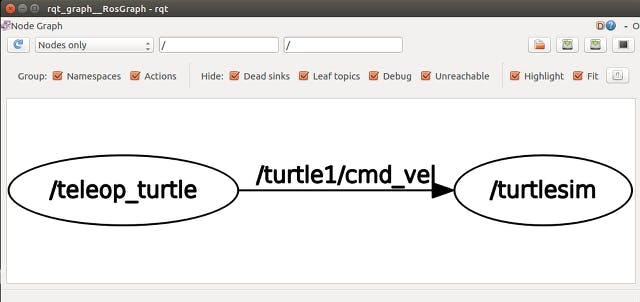

ROSを始めよう その２
前回の内容
その１今回の内容
ROSの基礎知識を身に着け、ROSを体験する参考：
http://wiki.ros.org/ja/ROS/Tutorials/UnderstandingNodes
http://wiki.ros.org/ja/ROS/Tutorials/UnderstandingTopics
http://wiki.ros.org/ja/ROS/Tutorials/UnderstandingServicesParams
参考にするもの
主に参考にしたのは次の２つです。- ROSwiki Tutorial
- ROSではじめるロボットプログラミング―フリーのロボット用「フレームワーク」 (I・O BOOKS)
以下の書籍は目を通してみた感じとして、初心者にはやや厳しい印象を受けたので、今回はあまり参考にしませんでしたが、中級者レベルの方は読んでみると良いと思います。
- ROSプログラミング ---簡単な応用例が充実しているようなので、今後参考にするかもしれません
- Raspberry Piで学ぶ ROSロボット入門
- 実用ロボット開発のためのROSプログラミング
- ROSロボットプログラミングバイブル
- プログラミングROS ―Pythonによるロボットアプリケーション開発 (オライリー・ジャパン)
ROSの基本用語
ここではROSの基本用語と考え方をざっくりと理解します。Node
ROSでは１つのプロセスをNodeと呼びます。それぞれのNodeは「キーボード入力を受ける」とか「カメラ画像を取得する」とか「モータを動かす」とか「ログを出力する」とかです。
これは、複数のNode同士がつながってグラフを作るためです。
複数のプログラムを結合する通信ライブラリこそがROSの中心部であるとも言えます。
Message
ROSで通信するためにはあらかじめ決められた型が必要なのですが、型を持った通信で受け渡しされるデータのことをMessageと呼びます。Master
roscoreコマンドで起動するプロセスで、ROSのNode同士が通信するための名前の解決をしてくれます。必ず最初に起動しておく必要があります。ROSの通信方法
先ほど、ROSではNode同士が通信すると述べました。ここではその通信方法をざっくりと理解します。
Topic
ROSのNodeがPublusher/Subscriberモデルでデータを送受信する通信方法です。あるNodeがあるTopicにデータをPublishして(送信)、そのTopicから別のNodeがデータをSubscribeします(受信)。このとき送受信されるデータがMessageと呼ばれるのでしたね。
このとき、それぞれのNodeは通信相手が誰なのかを意識することなく通信することができます。これは、Topicの型が決まっているため、相手のIPアドレスやポート番号の情報が通信に必要ないからです。
相手を仮定しない通信であるため、相手からの返事を待たない非同期通信となります。
Service
相手に何かをしてもらい、その成否を知りたいときに利用する同期通信です。ここではあるNodeをServer、別のNodeをClientと呼ぶことにします。ServerはClientに呼び出されたら何らかの処理をしてくれます(サービスを提供)。そしてその成否をClientに返します。Clientに呼び出されるまでは待機しています。それに対してClientはServerを呼び出し、何らかの処理をさせます(サービスを要求)。そしてServerから成否が返ってくるのを待つのですが、その間Client側の処理は止まります。
Parameter
同じプログラムで様々なロボットを動かせるように、ロボットごとに詳細なパラメータを通信により設定します。Action
Serviceでは成否が返ってくるまでClient側の処理が止まってしまい、その間の処理を中断したり、途中の様子を見たりすることができません。別のTopicやServiceを立ち上げて併用すれば良いのですが、そんなことをしなくてもActionというものを使えば、まとめて行うことができます。ここではNodeをActionServer、ActionClientと呼ぶことにします。actionlibというライブラリを利用して実装するのですが、詳しくは実装時に見ていきましょう。ROSの各通信方法を体験する
ここではturtlesimというちょっとしたロボットシミュレータ(ロボットというか亀ですが)を使って先ほど紹介した各通信方法を体験し、何となく感覚をつかみます。また、幾つかの基本的なコマンドにも慣れていきましょう。先に注意しておくと、ROSでは複数のターミナル(端末)を立ち上げることになります。Ctrl+Shift+Tなどをうまく使って、できるだけごちゃごちゃにならないようにしましょう。
まず最初に必ずすること
$ roscoreコマンドでMasterを起動しましょう。このターミナルはそのままにしておく必要があります。
亀を動かすためのプログラムを走らせる
ターミナルをもう1つ立ち上げて、$ rosrun turtlesim turtlesim_nodeを実行しましょう。(必要に応じて$ sudo apt-get install ros-kinetic-turtlesimでインストール)ちなみにこのrosrunはプログラムを実行するコマンドです。
上手くいかないときは、$ sudo apt-get install ros-kinetic-ros-tutorialsをしてみましょう。
キーボード操作するためのプログラムを走らせる
ターミナルをもう1つ立ち上げて、$ rosrun turtlesim turtle_teleop_keyを実行しましょう。このターミナル上で矢印キーを押すと亀が動きます。
実はこれがもうTopicによる通信なのです。それがよくわかるように次は可視化してみたいと思います。
可視化ツールを使ってみる
新しいターミナルを立ち上げて、$ rqt_graphというコマンドを打つと、Nodeの関係が表示されます。
見てみると、teleop_turtleというNodeとturtlesimというNodeが、/turtle1/cmd_velというTopicで結ばれています。teleop_turtleというNodeではキーボードの入力を速度指令に変換して、TopicにPublishしています。そのTopicからturtlesimというNodeが速度指令をSubscribeして亀を動かしています。2つのNodeはお互いを意識せずに通信をしているのです。
コマンドrostopic
新しいターミナルを立ち上げて、$ rostopic echoというコマンドを打ってみましょう。これはTopicを詳しく見ることができるコマンドなのですが、このままではよくわかりません。そこで、$ rostopic echo /turtle1/cmd_velと打ってみましょう。先ほどrqt_graphで見ましたが、/turtle1/cmd_velというのはTopicの名前ですね。この状態で亀を動かしてみると、linear、angularのように前進速度と回転速度のデータが表示されると思います。このようにrostopicではTopicを詳しく見ることができるのです。
ちなみに、このrostopicも実は1つのNodeであり、今回の場合はTopicからSubscribeすることで、情報を取得しているのです。
それでは、他の使い方も見てみましょう。
$ rostopic type /turtle1/cmd_velこれでTopicの型を調べることができます。今回のTopicの型はgeometry_msgs/Twistのようです。
$ rostopic pub /turtle1/cmd_vel geometry_msgs/Twist -- '[2.0, 0.0, 0.0]' '[0.0, 0.0, 1.8]'型がわかればTopicにPublishして値を書き込めます。亀が動きましたか？
$ rostopic pub -r 1 /turtle1/cmd_vel geometry_msgs/Twist -- '[2.0, 0.0, 0.0]' '[0.0, 0.0, 1.8]'オプションで-r 1を加えると1Hz(1秒に1回)データ送信を繰り返します。
$ rostopic list現在登録されている全Topicの一覧表示
コマンドrosservice
$ rosservice list現在利用可能な全Serviceの一覧表示この中に/spawnという亀を生成するServiceがあるので、これを使ってみましょう。
$ rosservice type /spawn | rossrv showでServiceの引数と返り値を調べます。
$ rosservice type /spawn | rossrv show
float32 x
float32 y
float32 theta
string name
---
string name
$ rosservice call /spawn 2 3 1 'kame'で実際にServiceを呼び出せます。
コマンドrosparam
$ rosparam list現在セットされている全Parameterの一覧表示$ rosparam get /background_bParameterにセットされた値の取得(ここでは背景色の青成分)
$ rosparam set /background_b 100Parameterに値をセット
あれ、色が変わりません。実はParameterは基本的に起動時に1回読み取るものなので、$rosservice call /clearというコマンドで/clearというServiceを呼び出して、更新しましょう。色は変わりましたか？
まとめ
今回はROSの基礎知識を身に着け、幾つかのコマンドによってROSを体験していきました。次回はついにプログラムを書いていこうと思います。
その３